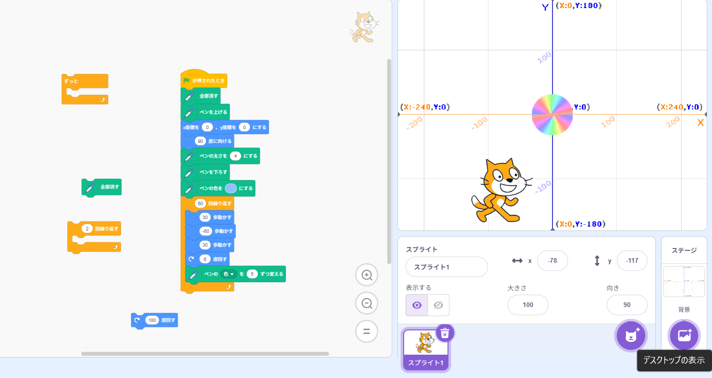
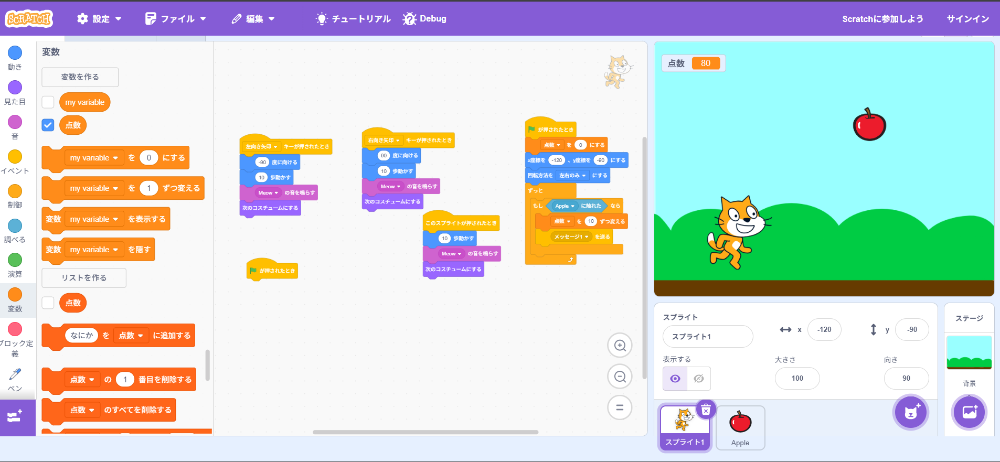

1週目のレポート ： 公大高専１年実習I-1
4班29番 藤本 悠生
第1週目
1-1 サイエンスアート

1.内容
スクラッチで線を引いたり、色を変えたりする方法を学び、幾何学的な円を描く方法をプログラミングで書くという内容だ。
それをとおして、自分の好みの円や直線を描いた。自分が描いた円は上の図である。
2.感想
中学校では初歩的なプログラミングしか習わなかったものの、今回の実験実習では、本格的なプログラミングを学び、
新たな知識を得ることができたため、とても面白かった。
また、少し値が変わるだけで様々な形の円を見ることができると気づき、関心深い内容だったと感じる。
1-2 ゲーム

1.内容
スクラッチのプログラミングを通して、うえからリンゴが落ちてくるのを猫を催したキャラクターがキャッチするとスコアが変化する
というプログラムを書いた。
2.感想
1-1のプログラミングを通して新たにゲームを作成することはとても満足いく内容で面白かった。というのも
これまでゲームを作成する機会がなく、初めての体験だったからである。また、プログラミングは、論理的な考え方を要するなと深く感じた。
1-3 ホームページ作成
私のホームページ
1.内容
ホームページ作成では、GitHubを通して自分だけのホームページを作るという実験実習である。
そこで、自分のホームページを編集し、自分のステータスを入力するという内容だ。
2.感想
これまで自分だけのホームページを作ることは行う機会がなく、初めての体験だったためとても興味深い内容で
面白いなと感じた。また、この体験を通して一人で自分だけのホームページを作成してみたいなと感じた。
各ページへのリンク
1週目のレポート
2週目のレポート
3週目のレポート
私のホームページ